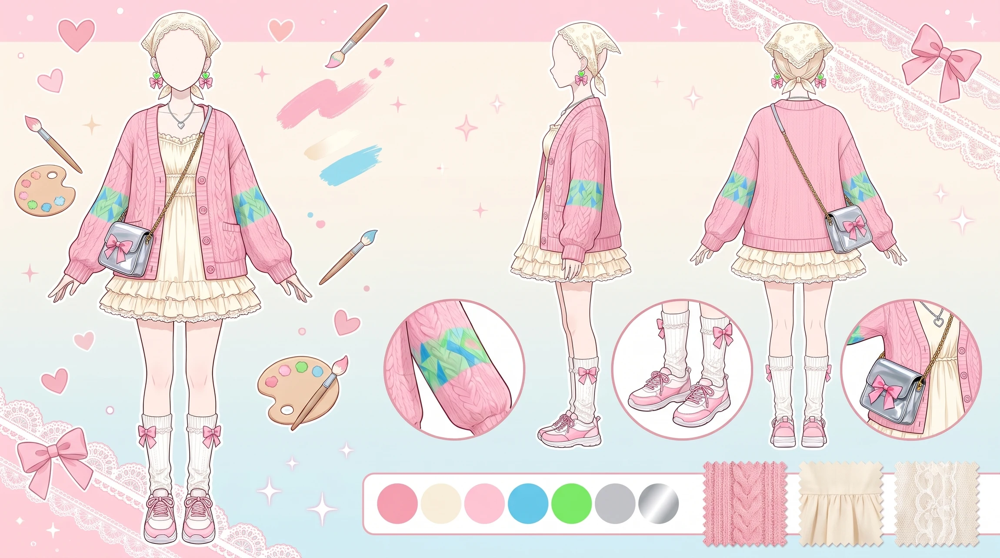
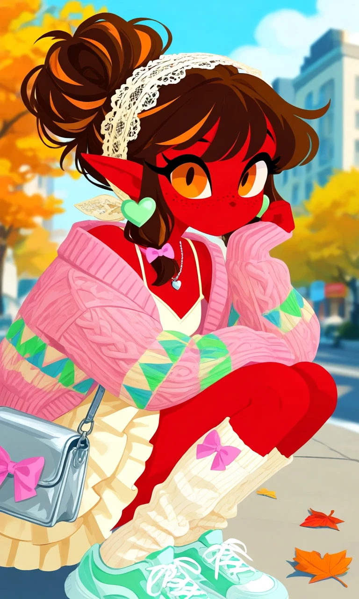
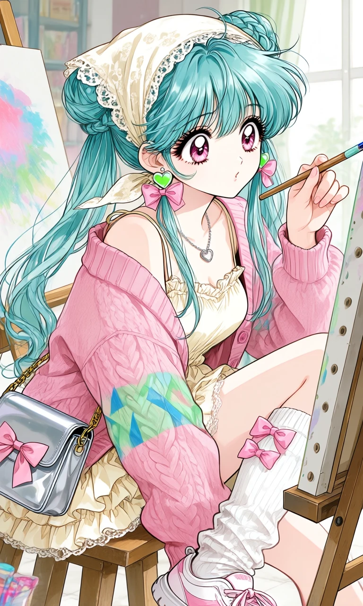

Paint Me Pink

Outfit Prompt
Outfit: cream dress, spaghetti strap, v neck, multiple layer skirt, ruffle frill, pink knitted cardigan, oversized sleeves, oversized cardigan, green and blue triangle pattern on cardigan, pastel green heart earrings, silver necklace, cream lace head scarf, pink hair bows in side locks, silver purse with pink bow, white high socks, socks that scrunch and bunch up under the knee, pink bows on socks, gym shoes
Outfit Examples



